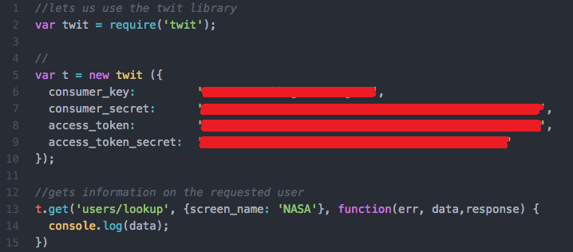
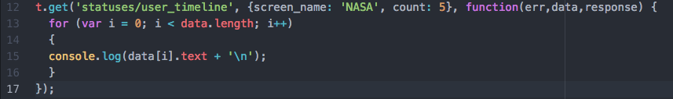
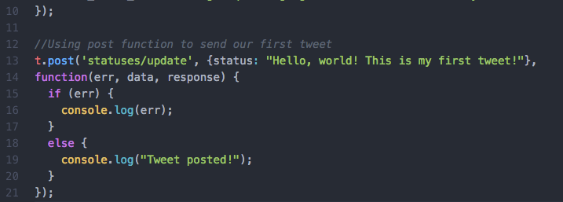
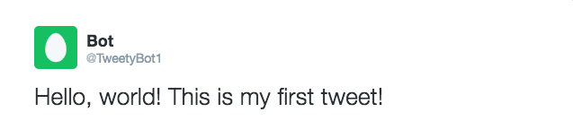
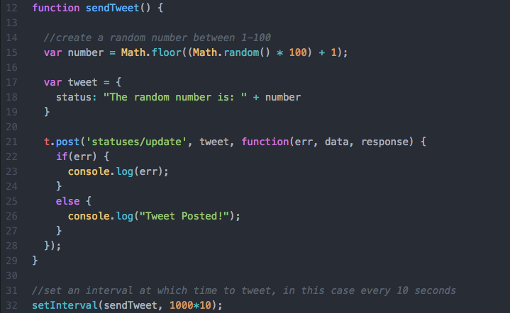
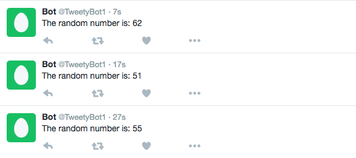
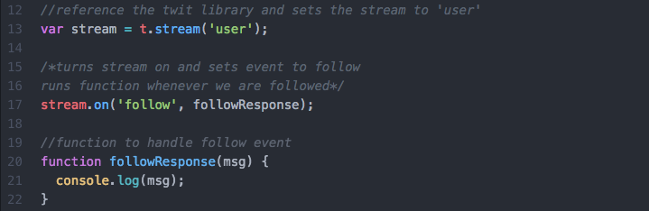
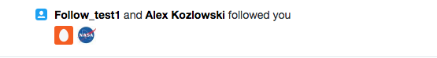

Using the Twitter API
Now that we have everything setup, its time to start coding. Open your favorite text editor and let's get started!
Our first API request - using get
Now we are going to setup our index.js file to make use of the Twit library. This library will allow us to make calls to the Twitter API. Our first request
will be using the get method to return some data about a specific user, in this case NASA, in the form of raw JSON data to the console.
Here's the code for with the setup and first request (the keys are blocked out because they are connected to my twitter bot account):

Not too bad right? Let's break this down one line at a time:
- Line 2:
var twit = require('twit') This line of code essentially imports the twit library so that we can make use of its functions and interact with the Twitter API.
It loads the twit package and gives us access to all the functions and properites of the library throught the twit variable. Without this, accessing the API would be much more difficult
- Lines 5-9: Remember those keys we got after creating a new Twitter application? Well it's time to put those to use.
var t = new twit is creating a new instance of twit with our
API keys. These keys are tied to our new Twitter account and allow us to access the Twitter API. Twitter uses these to keep track of how much and how often we are using the API. This, along with line 2,
will appear everytime we are using twit and the Twitter API.
- Lines 13-14:
t.get() means we are calling the get function in the twit (t) object. 'users/lookup' signifies the action we are taking - we want to lookup information.
{screen_name: 'NASA'} is a JavaScript object that we are passing into the function where, 'NASA' is the user we want to lookup. function(err, data, response)is where the the data
will come in. console.log(data)will output the raw JSON data to the console.
Lets take a look at the JSON response
[ { id: 11348282,
id_str: '11348282',
name: 'NASA',
screen_name: 'NASA',
location: '',
description: 'Explore the universe and discover our home planet with @NASA. We usually post in EDT (UTC-4).',
url: 'https://t.co/TcEE6O9Jfb',
entities: { url: [Object], description: [Object] },
protected: false,
followers_count: 19929157,
friends_count: 261,
listed_count: 85645,
created_at: 'Wed Dec 19 20:20:32 +0000 2007',
favourites_count: 1999,
utc_offset: -18000,
time_zone: 'Eastern Time (US & Canada)',
geo_enabled: true,
verified: true,
statuses_count: 44662,
lang: 'en',
status:
{ created_at: 'Thu Nov 17 01:44:42 +0000 2016',
id: 799065697200603100,
id_str: '799065697200603136',
text: '“Great Valley” found on Mercury provides more evidence that the small planet closest to the sun is shrinking. More:… https://t.co/Ki4NPKSFmf',
truncated: true,
entities: [Object],
source: 'Sprinklr',
in_reply_to_status_id: null,
in_reply_to_status_id_str: null,
in_reply_to_user_id: null,
in_reply_to_user_id_str: null,
in_reply_to_screen_name: null,
geo: null,
coordinates: null,
place: null,
contributors: null,
is_quote_status: false,
retweet_count: 373,
favorite_count: 822,
favorited: false,
retweeted: false,
possibly_sensitive: false,
lang: 'en' },
contributors_enabled: false,
is_translator: false,
is_translation_enabled: false,
profile_background_color: '000000',
profile_background_image_url: 'http://pbs.twimg.com/profile_background_images/590922434682880000/3byPYvqe.jpg',
profile_background_image_url_https: 'https://pbs.twimg.com/profile_background_images/590922434682880000/3byPYvqe.jpg',
profile_background_tile: false,
profile_image_url: 'http://pbs.twimg.com/profile_images/188302352/nasalogo_twitter_normal.jpg',
profile_image_url_https: 'https://pbs.twimg.com/profile_images/188302352/nasalogo_twitter_normal.jpg',
profile_banner_url: 'https://pbs.twimg.com/profile_banners/11348282/1478121007',
profile_link_color: '205BA7',
profile_sidebar_border_color: '000000',
profile_sidebar_fill_color: 'F3F2F2',
profile_text_color: '000000',
profile_use_background_image: true,
has_extended_profile: false,
default_profile: false,
default_profile_image: false,
following: false,
follow_request_sent: false,
notifications: false,
translator_type: 'regular' } ]
There is quite a bit of information in there. However, we do not need all of it. We can extract certain bits of data to learn about the user we looked up. Let's focus on a few things.
Id: This gives us the Twitter id of the user in the form of an integerId_str: Similar to one above, but in the form of a stringscreen_name: The users twitter handlefollowers_count: Gives us the total number of followers the user hastext: The most recent tweet from the user's account
We can use this JSON data and extract the information we want. We can now modify our code to reflect the extraction of certain information:

In this bit of code we broke things down a bit further. On Lines 12-13: we set up an object with our search parameters, we will pass this separately to the t.get() function.
In Lines 20-24: this function is getting the specific data we asked for by accessing different attributes of the object. In this case we get the User ID, Screen_name, number of followers, and most
recent tweet. We then have all of this printed to the console window.
The following data was extracted from the JSON response:
User Id: 11348282
Screen_name: NASA
Followers: 19929157
tweet: “Great Valley” found on Mercury provides more evidence that the small planet closest to the sun is shrinking. More:…https://t.co/Ki4NPKSFmf
Now that we have a better understanding of the get function, let's request a different set of data. This time instead of using 'users/lookup' we are going to use
'statuses/user_timeline' this allows us to lookup a specific user's timeline and get a specified number of their most recent tweets.

The first 10 lines are the same as the first example, they contain the new instance of twit(t) and the API keys. The rest of the code was condensed into one function.
We now have 'statuses/user_timeline' and the search parameters are a little bit different. We still have screen_name for the user we want to lookup. However,
we added countthis tells Twitter that we want the five most recent tweets from this user. We then loop through the incoming data and pull out each tweet by using data[i].text
the data is then printed to the console.
Here is the response:
“Great Valley” found on Mercury provides more evidence that the small planet closest to the sun is shrinking. More:… https://t.co/Ki4NPKSFmf
Even though it hasn't launched, our Asteroid Redirect Mission is already helping to close Strategic Knowledge Gaps:… https://t.co/VxE9I9Gmwb
From New York City to Rio, we're helping cities address climate risks and we're sharing their solutions:… https://t.co/ij2hf0y9lW
Two of the sun's coronal holes spewed solar wind towards Earth on Nov 8-9. Learn more from @NASASunEarth's #SDO:… https://t.co/ovJZH931qI
Not only have we landed humans on moon & missions on Mars, we've helped @JohnDeere develop self-driving tractors:… https://t.co/puJUEJoO7c
Post - posting tweets to our Twitter account with the API
Great, we now know how to use the Twitter API to extract or get data. Now we are going to learn how to post tweetts to our Twitter account using the post function
Posting tweets using the API is extremely simple. We'll post some code and break it down.

The first 10 lines are the same as the get example. It contains the API key and the twit object to use the library. Let's look at the new stuff.
t.post()This is similar to t.get() it means we are calling the post function in the twit (t) object, this allows us to make posts to Twitter through the API 'statuses/updates' means we want to post a status update to Twitter{status: "Hello, world!..."} is a javascript object that we are passing in to the post function. We are setting the status of the post to the tweet we wantfunction(err, data, response)is the callback function that returns error information if something goes wrong, the data in the form of an object and the response after posting the tweet- we also have the error print to the console if one occurs as well as "Tweet posted" if everything goes right
Let's take a look at the result:

Now that we know how to post a tweet using the post function lets make it a little more interesting. We are going to create a simple twitter bot that posts a random number a set interval of time. Here's the code:

In this, we create one function that we can pass to setInterval which takes a function to post a tweet, as well as the interval at which the tweet should be posted to Twitter. We use
var number = Math.floor((Math.random() * 100) + 1); to generate a random number in the range of 1-100. We then create, on Line 17-19 and object with the status we want to tweet.
This tweet includes the the random number at the end. t.post('statuses/update', tweet, function) tells the API that we want to post a twitter account with status tweet that
we created above. The callback function is then called with information regarding the post. sendTweet() is then passed to the function setInterval along with the interval.
setInterval() takes time in the form of milliseconds. 1000 milliseconds is equal to one second. So, 1000 * 10 tells setInterval to send the tweet every 10 seconds.
Here is the result, notice the time between tweets is 10 seconds. I do not recommend tweeting every 10 seconds, as this may raise some flags for tweeting to often. This is for demonstration purposes
The result:

Twitter API Stream feature
Now we are going to talk about the stream feature of the Twitter API. We will then create a bot that takes advantage of this by responding to users who follow our bot.
The stream feature of the Twitter API gives us access to Twitters global stream of tweet data, this means we are able to get real time data tweet data. The two main streams available are the public
stream and the User Stream.
Public Stream- This is a stream of all the public data flowing through twitter, this essentially gives us a view of every tweet happening on twitter.User stream - This is a stream that provides data and events for a specific user, and the one we will be using. This is concerned with the data flowing into a single user,
in this case, our bot.
We will use the 'User' stream and the follow event to get to get data when anyone follows our bot

Now to break it down:
- Line 13:
var stream = t.stream('user') Creates a variable called stream and uses the twit object to set the stream to 'user', this will get data related to our twitter account
- Line 17:
stream.on('follow', followResponse) this is turning the stream on so we can get real time data. 'follow' sets the event to listen for, when someone
follows our account we will execute the function followResponse()
- In the last few lines we are getting the JSON response and printing it to the console. We will look through this to find out how to get the name of the user we want to tweet a response to
{ event: 'follow',
source:
{ id: 799316936404439000,
id_str: '799316936404439041',
name: 'George Washington',
screen_name: 'Follow_Test1',
location: null,
url: null,
description: null,
protected: false,
followers_count: 0,
friends_count: 0,
listed_count: 0,
created_at: 'Thu Nov 15 18:23:03 +0000 2016',
favourites_count: 0,
utc_offset: null,
time_zone: null,
geo_enabled: false,
verified: false,
statuses_count: 0,
lang: 'en',
contributors_enabled: false,
is_translator: false,
is_translation_enabled: false,
profile_background_color: 'F5F8FA',
profile_background_image_url: null,
profile_background_image_url_https: null,
profile_background_tile: false,
profile_image_url: 'http://abs.twimg.com/sticky/default_profile_images/default_profile_1_normal.png',
profile_image_url_https: 'https://abs.twimg.com/sticky/default_profile_images/default_profile_1_normal.png',
profile_link_color: '1DA1F2',
profile_sidebar_border_color: 'C0DEED',
profile_sidebar_fill_color: 'DDEEF6',
profile_text_color: '333333',
profile_use_background_image: true,
default_profile: true,
default_profile_image: true,
following: null,
follow_request_sent: null,
notifications: null,
translator_type: 'none' },
target:
{ id: 799011006689267700,
id_str: '799011006689267717',
name: 'Bot',
screen_name: 'TweetyBot1',
location: null,
url: null,
description: null,
protected: false,
followers_count: 0,
friends_count: 0,
listed_count: 0,
created_at: 'Wed Nov 15 22:07:23 +0000 2016',
favourites_count: 0,
utc_offset: null,
time_zone: null,
geo_enabled: false,
verified: false,
statuses_count: 4,
lang: 'en',
contributors_enabled: false,
is_translator: false,
is_translation_enabled: false,
profile_background_color: 'F5F8FA',
profile_background_image_url: null,
profile_background_image_url_https: null,
profile_background_tile: false,
profile_image_url: 'http://abs.twimg.com/sticky/default_profile_images/default_profile_2_normal.png',
profile_image_url_https: 'https://abs.twimg.com/sticky/default_profile_images/default_profile_2_normal.png',
profile_link_color: '1DA1F2',
profile_sidebar_border_color: 'C0DEED',
profile_sidebar_fill_color: 'DDEEF6',
profile_text_color: '333333',
profile_use_background_image: true,
default_profile: true,
default_profile_image: true,
following: null,
follow_request_sent: null,
notifications: null,
translator_type: 'none' },
created_at: 'Thu Nov 15 18:26:41 +0000 2016' }
At the top of this JSON data we can see the event is 'follow'. As we scroll down we see source and within this we can see the name and screen_name of the user who followed us.
We can now use this information to formulate a tweet that responds to the user who followed us. Let's write some code that does this.

- The lines above are the same to the previous example. The stream is set to 'user' and it is listening for 'follow' events
- Now instead of printing the JSON data to the console, we are going to extract the
Screen_name and use it to formulate a response. var name = msg.source.screen_namesaves
the Twitter handle of the user that followed us to the name variable.
- We then create a function that takes in a message that we want to send called
sendTweet() we use the '@' symbol to target the user that followed us then we concatentate the message
- We pass the message to
sendTweet() which uses t.post() to send our response to Twitter.
- The callback function is then executed, and we receive the err message if something goes wrong or the "successful tweet" if it works


We learned a lot so far. Now we are going to put it all together to create a bot that tweets a random message at users who mention our Twitter handle